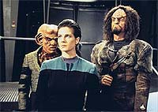
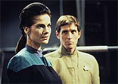
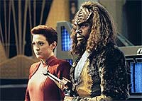
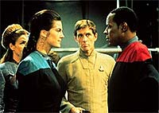
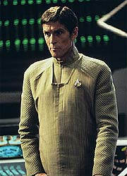

MANCHETE
DO EPISDIO
Episdio
de se perde por excesso de
convenincias e repetio de tramas
Episdio
anterior | Prximo
episdio
Sinopse:
Data Estelar: 47182.1.
Com uma violenta tempestade de plasma
aoitando o cinturo Denrios, Deep Space Nine foi novamente
evacuada, deixando apenas os tripulantes seniores a bordo.
Inspecionando um porto de atracao, O'Brien e Odo encontram
Quark, que oferece uma tola desculpa por estar ali, para a total
desconfiana de Odo, que no faz nenhum tipo de vistoria do
local. Quando os trs deixam o local, o espectador pode ver uma
espcie de aparelho (claramente instalado por Quark) na parede do
corredor do porto de atracao.
No OPS (Centro de Operaes de DS9), Dax (que est acompanhada
de Sisko e Kira) detecta uma nave rumando para a estao. A nave
envia uma mensagem em que uma voz identifica a nave como um
cargueiro seriamente avariado devido tempestade, com grande
necessidade de ajuda. Os transportes so no efetivos e o raio
trator mal consegue trazer a nave para o anel de atracao.
Sisko envia O'Brien e Odo para encontrar os refugiados.
Na comporta de ar um grupo de aliengenas composto por uma mulher
(Mareel), dois Klingons (T'Kar e Yeto) e um nervoso Trill (Verad)
rendem O'Brien e Odo, obrigando o transmorfo a retornar a seu
estado gelatinoso e a entrar em um receptculo. Enquanto Yeto vai
pegar Quark, os outros trs levam O'Brien e o receptculo
enfermaria, onde obrigam Bashir a colocar o receptculo em
suspenso animada.
Os intrusos tomam o OPS, utilizando Bashir e O'Brien como refns.
Mareel e Verad desabilitam os sistemas primrios e secundrios.
O'Brien suspeita do envolvimento de Quark. Dax observa Verad.
Yeto vai at o bar de Quark, que o estava esperando para efetuar
uma venda. Entretanto, ao invs de Latinum, Yeto oferece um
desruptor e leva Quark sob custdia.

Sisko
pergunta ao lder do bando (Verad) o que ele quer. Ele quer o
simbionte Dax, algo que ele entende ser seu por direito. Se todos
cooperarem ningum sair ferido, exceto Jadzia, que morrer sem
o simbionte. Quark jogado ao OPS por Yeto, sob um olhar furioso
de Kira.
Verad diz no ter escolha seno sacrificar Jadzia no processo.
Ele dedicou sua vida inteira para se preparar para a unio com um
simbionte e foi julgado "inadequado" pela Comisso de
Avaliao de Simbioses do planeta Trill. Jadzia diz que no h
do que se envergonhar, pois a taxa de aceitao inferior a um
para dez (mesmo os seus prprios pais e a sua irm no
conseguiram a unio, mas ainda assim tiveram uma vida bastante
produtiva). Verad diz que fcil pra ela falar, pois ela foi
escolhida.
Verad diz que o simbionte Dax uma excelente combinao para
ele, bem como a proximidade da Fenda Espacial oferece uma tima
oportunidade de fuga. Dax insiste com Verad de que deve ter havido
um bom motivo para ele no ter sido aprovado. Sobre o que ele
diz: "Tudo que eles fizeram foi me condenar a uma vida de
mediocridade. Bem, eu me recuso a aceitar isto. Eu no vou passar
o resto da minha vida sonhando sobre o que eu poderia ter sido, o
que eu deveria ter sido. Eu mereo mais. E eu vou RECEBER este
'mais'".
Os captores tentam levar Bashir e Jadzia para a enfermaria, para a
cirurgia. Quando Bashir se recusa a ajudar, Verad acerta O'Brien
no ombro com um feiser, e diz que se Bashir no cooperar todos vo
morrer, ele no tem mais nada a perder. Jadzia concorda em se
sacrificar (e faz Verad prometer que ningum mais sair ferido)
e convence Bashir a realizar a cirurgia, aps tratar dos
ferimentos de O'Brien.
Quando Dax vai se retirando, ela tenta confortar Sisko. Mareel
beija a testa de Verad e lhe deseja boa sorte, enquanto ele vai ao
encontro do seu maior sonho.
Na enfermaria, Verad se recusa a ficar inconsciente durante a
cirurgia e quer observar tudo por um monitor. Ele ameaa os refns.
Bashir concorda. O mdico coloca Jadzia para dormir. Ao ver
Jadzia perder os sentido ele suspira, "me perdoe".
Ocorre uma briga no OPS, que termina com Mareel enfiando um feiser
na cara de Sisko e fazendo-o parar. Na enfermaria, Bashir retira o
simbionte de Dax e o coloca em Verad. A face de Verad se
"ilumina" com a unio.
No OPS, Kira diz a Quark que ele "cruzou a linha", os
vendeu, e que Jadzia pode morrer por causa disto.

Mareel
diz no querer ferir ningum. Jadzia deve morrer, para
satisfazer o sonho de Verad. Mareel deve muito a Verad. Ele a
retirou de uma vida de prostituio, meio onde se conheceram.
Ela capaz de qualquer coisa para v-lo feliz. "Mesmo deix-lo
partir?", pergunta Sisko. Ela diz que Verad ficar mais
inteligente e confiante aps a cirurgia, mas no mudar o
relacionamento dela com ele. Sisko diz que ela est errada e que
Verad Dax ser uma pessoa totalmente diferente daquela que ela
conheceu. Mareel diz que no vai trair Verad, acontea o que
acontecer.
"Eu nunca duvidei disto", fala um agora Verad Dax,
retornando ao OPS. Sem um pingo da timidez e da insegurana do
seu antigo eu.
Na enfermaria, Bashir est tentando de tudo para prolongar a vida
de Jadzia. O Klingon Yeto, no considera nobre, mas sim covarde,
o ato de Jadzia. Bashir diz no estar interessado em filosofia
Klingon e Yeto fica impressionado com a determinao de Bashir
em no deix-la morrer e acaba por "dar uma de
enfermeiro" para o mdico.
Jadzia acorda e sua face mostra o exato oposto do efeito na de
Verad, "eu me sinto to s", ela sussurra. Bashir,
devastado pelo que foi obrigado a fazer, jura que no vai deix-la
morrer.
Os intrusos tm o que queriam e agora aguardam a tempestade
diminuir para poder partir. Sisko tenta conversar com Verad, se
valendo de sua amizade com Dax, Verad responde com afeto e o chama
de Benjamin. Os dois vo lembrando das experincias passadas de
Ben com Curzon e Jadzia. Quando Sisko tenta persuadi-lo a salvar a
vida de Jadzia, Verad diz que no possvel e que a integrao
est comeando.
Verad diz que o simbionte ainda est muito fraco e pode no
sobreviver a outro transplante, porm Sisko insiste ainda assim.
Quando Mareel enfrenta Verad, perguntando por que ele est dando
ouvidos a Sisko, ele responde, para total consternao de
Mareel, "porque ele meu amigo". Sisko diz que, frente
recusa de Verad Dax em ajudar Jadzia, ele no mais o reconhece
como amigo.
Pouco depois, com Verad no escritrio de Sisko, Mareel parece
estar com sua mente em um outro lugar, bem distante dali. Sisko
continua a pression-la, frente clara mudana de Verad.
Mareel j est claramente insegura sobre o futuro dela junto a
Verad.
Quark usa uma distrao e "sai no brao" com o
Klingon T'Kar. O Klingon o joga longe. Quando o Ferengi cai,
reclama de uma incrvel dor no ouvido. Verad diz que Mareel deve
lev-lo a enfermaria. Na enfermaria, Quark faz um sinal para
Bashir enquanto este o examina. Bashir logo percebe que um plano
est em andamento.
A tempestade est quase no fim. Verad diz que vai partir sozinho
e que Mareel deve esperar por ele no ponto de encontro, do outro
lado da Fenda Espacial, como combinado. Mareel e os dois Klingons
devem se certificar de que ningum ir segui-los antes de
partir. Mas a despedida dos dois claramente mostra que existe algo
de errado. Sisko observa tudo com ateno.
Enquanto Yeto utiliza um instrumento mdico, a pedido de Bashir,
na orelha de Quark. Bashir, por trs, utiliza uma hipo para
desacordar o Klingon. Bashir recupera o receptculo de Odo. Quark
consegue abri-lo.
A tempestade se foi. Verad chama Yeto, que no responde. Verad
deduz que Bashir o rendeu, de alguma forma, e provavelmente Odo
est livre. Verad decide levar T'Kar como escolta e Kira como refm
para o porto de atracao de sua nave. Sisko e Verad se despedem
nervosamente.
Sozinha, com Sisko e O'Brien, Mareel admite que Verad mentiu para
ela sobre o posterior encontro deles no quadrante Gama. Ela diz
que ele no precisa mais dela. Sisko discorda e diz que ele
precisa dela agora mais do que nunca. O simbionte deve ser
retirado o quanto antes. Mareel toma uma deciso e entrega o
feiser a Sisko.

Verad
e T'Kar chegam comporta de ar com Kira. Entretanto, no h
nave l. Odo, que havia assumido a forma de um carrinho de
ferramentas, diz que ele liberou as garras de atracao. Verad
atira, sem acertar em Odo, e foge, enquanto Kira e Odo dominam
T'Kar.
Sisko pra no caminho de Verad para um explorador, com um feiser
em punho. Verad no acredita que Sisko vai atirar e arriscar
ferir o simbionte, ele abaixa o seu prprio feiser e passa por
Sisko e diz "Adeus, Benjamin". Porm, quando se vira,
Sisko ainda est apontando o seu feiser, diz "no me chame
de Benjamin" e atira.
Verad acorda em um leito da enfermaria, j sem o simbionte Dax,
enquanto em um outro leito prximo Bashir revive Jadzia j com o
simbionte. Verad est desesperado e se sente mais solitrio do
que nunca. Apesar de Mareel dizer que sempre estar com ele,
Verad aparentemente est alm de qualquer coisa.
Enquanto isso, Jadzia acorda e Sisko a abraa. Ela diz: "Eu
me lembro de tudo, Benjamin. Tudo que ele pensou, tudo que ele
fez. E to triste. Eu acho que ele, de algum modo, ficar
comigo para sempre agora".
Comentrios:
Quem esperou encontrar aqui qualquer conseqncia da
"Trilogia do Crculo", mesmo uma pequena mudana do
"Status Quo" ou referncia passageira --alm da mala
de Latinum do Quark, claro--, quebrou a cara. As boas regras de
continuidade foram postas para escanteio nesta semana.
O episdio depende, para funcionar, de tal quantidade de convenincias,
descaracterizao de personagens e falta de conseqncias
posteriores que quase que automaticamente vai para a categoria do
medocre. Felizmente existe um ncleo de histria envolvendo a
dinmica de Sisko, Verad e Mareel que razoavelmente
interessante, tirando o episdio da categoria do "inassistvel"
(mas no por muito).
O primeiro elemento de trama que soa forado a idia da
tempestade, que leva permanncia de somente os personagens
regulares a bordo de Deep Space Nine, abrindo a possibilidade de
uma invaso. Como ns tivemos uma evacuao no episdio
imediatamente anterior, NO MNIMO desgastante a reutilizao
do mesmo dispositivo de trama. Tambm no estou muito certo
sobre a misso de Sisko & Cia. permanecendo na estao e
definitivamente INSATISFEITO com a permanncia de Quark.
Cabe lembrar tambm que no episdio "Dax",
da temporada passada, tnhamos um grupo de assalto em DS9,
tentando roubar o simbionte Dax. Mesmo que os episdios sejam
tematicamente no-relacionados, a reutilizao deste particular
elemento de trama NO MNIMO repetitiva.

inaceitvel que Odo, encontrando Quark em uma escotilha de ar, em
uma atitude suspeita e com uma histria absurda, no realizasse
uma busca completa e encontrasse o dispositivo (aparentemente com
a funo de desativar o detector de armas). Ainda mais uma coisa
enorme grudada na parede ao lado da porta, com luzes piscando. Sem
esta "descaracterizao e estupidificao" de Odo, o
episdio no existiria.
O outro principal ponto negativo de trama o "Quark nos
vendeu, ele foi longe demais". Quark aparentemente
perdoado (fora de cena), devido ao estratagema ao final do episdio,
e a histria varrida para debaixo do tapete no decorrer da srie.
Nas circunstncias do episdio, trs erros consecutivos.
Neste sentido, um outro ponto que deve ser comentado, em termos de
uma viso global da srie, a falta de continuidade em relao
ao fato de Jadzia afirmar que agora carrega as memrias de Verad.
Isso nunca foi retomado durante a srie de forma alguma.
Entretanto, o ponto de vista de Verad, como um Trill que no
conseguiu a unio e se ressente disso, oferece um bem-vindo
"insight" nas regras da sociedade Trill. Isso deveria
ter sido trazido para a frente do episdio, e no toda esta
trama de terroristas e refns.
A direo de Les Landau (veterano em Jornada nas Estrelas)
medocre. Mesmo se considerarmos que este foi um episdio
obviamente feito para poupar dinheiro, a falta de interesse visual
imperdovel. As cenas no OPS so particularmente
mal-elaboradas, com os atores literalmente "amontoados".
No mais, "mo frouxa", a maior parte do tempo.

O
elenco regular faz o que pode com o roteiro capenga. Um ponto
positivo a presena de Brooks e sua boa dinmica com Glover
(como Verad Dax, especialmente quando os dois reavivam memrias
contidas no simbionte Dax) e um grande ponto negativo so os
berros de Shimerman. Farrell se sai bem como Jadzia sem Dax. El
Fadil tambm est bem, especialmente nos momentos em que, talvez
pela primeira vez durante a srie, Bashir demonstra real afeio
por Jadzia.
Glover est bem como Verad (especialmente quando ele atira em
O'Brien) e excelente como Verad Dax. Gallagher tambm est muito
bem com o material fornecido a ela, porm Russ e Rankin esto pssimos.
A idia dos assaltantes de colocar Odo, em segurana, em um
receptculo, foi excelente. Alm disso, razovel assumir que
Odo seria um dos oficiais recepcionando a nave naquelas circunstncias.
A mudana de comportamento de Verad veio sem surpresa e a
manipulao de Sisko sobre Mareel no foi ruim (especialmente
devido competncia dos atores), mas foi bem previsvel.
A fala de Verad Dax, "porque ele meu amigo", para
Mareel, pegou "na veia" e talvez tenha sido o ponto alto
do episdio.
A falta de fechamento entre Jadzia & Julian sobre a cirurgia
envolvendo o simbionte, e tudo mais, foi CRIMINOSA (e
posteriormente varrida para debaixo do tapete).
Aparentemente a "Manobra Kira" no funciona bem com
mulheres. J Sisko encarando o Klingon foi fantstico.
"Invasive Procedures" tem uma pequena e boa histria
(ou pelo menos um tema para uma boa histria), tentando aparecer
embaixo de uma pilha de convenincias de roteiro, m execuo
e elementos mal-resolvidos. Essencialmente esquecvel.
Citaes
Kira -
"One thing I can say about the Cardassians: they've built DS9
to last."
("Uma coisa eu posso dizer sobre os Cardassianos: eles
construram DS9 para durar!")
Verad - "They reduced my entire life to one word:
unsuitable."
("Eles reduziram toda a minha vida a uma palavra:
inadequado.")
Trivia:
 Participao de John Glover como Verad. John Glover (nascido a
07/08/1944 em Salisbury, Maryland, EUA) participou de filmes como
"Robocop 2", "Gremlins 2: The New Batch",
"Batman & Robin" e "The Incredible Shrinking
Woman" e sries como "Brimstone",
"Kojak" e "Chicago Hope".
Participao de John Glover como Verad. John Glover (nascido a
07/08/1944 em Salisbury, Maryland, EUA) participou de filmes como
"Robocop 2", "Gremlins 2: The New Batch",
"Batman & Robin" e "The Incredible Shrinking
Woman" e sries como "Brimstone",
"Kojak" e "Chicago Hope".
Participao de Megan Gallagher como Mareel.
Megan Gallagher (nascida a 06/02/1960 em Reading, Pensilvnia,
EUA) participou de sries como a legendria "Hill Street
Blues" (onde comeou sua carreira na TV) no papel da oficial
Tina Russo, "China Beach" como Marie Holmes e
"Millennium" como Catherine Black. Tambm teve
participaes especiais em "Law & Order",
"ER" e "Picket Fences", entre outras.
Retornaria uma vez mais a trabalhar em Jornada, em especial
em DS9, no papel da enfermeira Garland, no episdio da
quarta temporada, "Little Green Men".
Participao dee Tim Russ como o Klingon
T'Kar. Tim Russ (nascido a 22/06/1956 em Washington D.C., EUA),
participou de filmes como "Trekkies", "Death Wish
4: The Crackdown", "Spaceballs" e
"Crossroads", fazendo Robert Johnson.
"Crossroads" aquele filme em que Ralph Machio e Steve
Vai acabam em um duelo de guitarra no inferno. Tambm participou
de sries como "SeaQuest DSV" , "Amazing
Stories" e a nova "The Twilight Zone". Tim Russ foi
finalista para o papel de Geordi La Forge de A Nova Gerao.
Gene Roddenberry preferiu o ator LeVar Burton para o papel, embora
Rick Berman tenha ficado bastante impressionado com Russ. Russ
acabou ganhando, anos mais tarde, o papel do Vulcano Tuvok em Voyager.
Tambm participou do episdio da sexta temporada da Nova Gerao,
"Starship Mine"; do episdio da terceira
temporada de DS9, "Through The Looking Glass",
interpretando o contraparte de Tuvok do universo do espelho e do
filme "Jornada nas Estrelas - Generations". O
fato curioso que Russ j interagiu em cena em Jornada
com todos os capites (at agora) de Jornada: Kirk, Picard,
Sisko, Janeway e mesmo Sulu, no episdio da terceira temporada de
Voyager, "Flashback".
Pequenas homenagens: "Khefka IV", a
Kafka, "The Cliffs Of Bole", ao veterano diretor Cliff
Bole, a nave estelar "Livingston", ao produtor e diretor
David Livingston. Livingston j havia sido homenageado
anteriormente quando o seu nome foi usado para nomear o peixe-leo
do capito Jean-Luc Picard.
Aqui vemos pela primeira vez o cenrio de
centro cirrgico da enfermaria de Bashir.
Iremos descobrir mais sobre o processo de
selecionar um Trill para unio em "Playing God",
nesta mesma temporada. Tambm nesta temporada iremos conhecer uma
interessante parte do passado de Curzon Dax em "Blood
Oath". Iremos conhecer o planeta natal Trill, e um pouco
de sua cultura, incluindo um segredo guardado a sete chaves, em "Equilibrium",
da terceira temporada.
Ficha
tcnica:
Histria de John Whelpley
Roteiro de John Whelpley e Robert Hewitt Wolfe
Direo de Les Landau
Exibido em 18/10/1993
Produo: 024
Elenco:
Avery Brooks como
Benjamin Lafayette Sisko
Ren Auberjonois como Odo
Nana Visitor como Kira Nerys
Colm Meaney como Miles Edward O'Brien
Siddig El Fadil como Julian Subatoi Bashir
Armin Shimerman como Quark
Terry Farrell como Jadzia Dax
Cirroc Lofton como Jake Sisko
Elenco convidado:
John Glover como Verad Dax
Megan Gallagher como Mareel
Tim Russ como T'Kar
Steve Rankin como Yeto